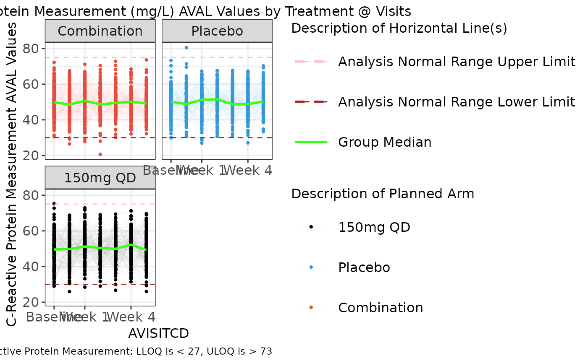
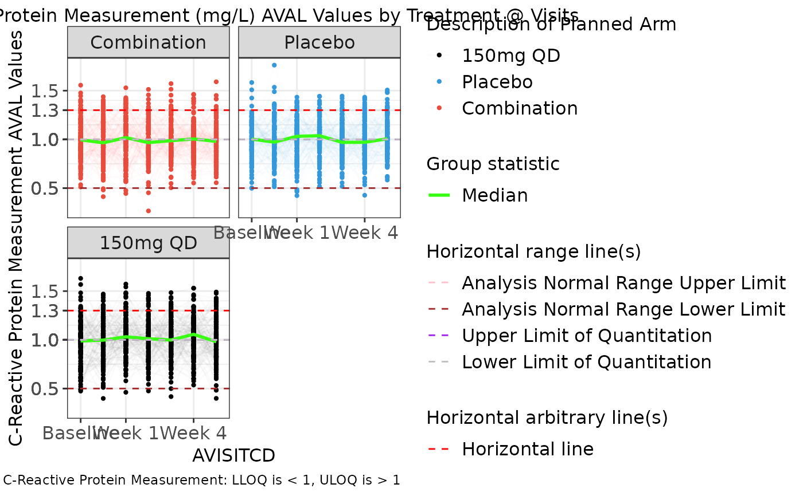
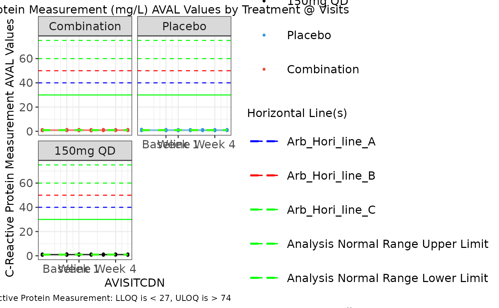

g_spaghettiplot.RdThis function is rendered by teal.goshawk module
g_spaghettiplot( data, subj_id = "USUBJID", biomarker_var = "PARAMCD", biomarker_var_label = "PARAM", biomarker, value_var = "AVAL", unit_var = "AVALU", trt_group, trt_group_level = NULL, time, time_level = NULL, color_manual = NULL, color_comb = "#39ff14", ylim = NULL, alpha = 1, facet_ncol = 2, xtick = waiver(), xlabel = xtick, rotate_xlab = FALSE, font_size = 12, group_stats = "NONE", hline_arb = NULL, hline_arb_color = "red", hline_arb_label = NULL, hline_vars = NULL, hline_vars_colors = NULL, hline_vars_labels = NULL )
| data | data frame with variables to be summarized and generate statistics which will display in the plot. |
|---|---|
| subj_id | unique subject id variable name. |
| biomarker_var | name of variable containing biomarker names. |
| biomarker_var_label | name of variable containing biomarker labels. |
| biomarker | biomarker name to be analyzed. |
| value_var | name of variable containing biomarker results. |
| unit_var | name of variable containing biomarker units. |
| trt_group | name of variable representing treatment group. |
| trt_group_level | vector that can be used to define the factor level of trt_group. |
| time | name of variable containing visit names. |
| time_level | vector that can be used to define the factor level of time. Only use it when x-axis variable is character or factor. |
| color_manual | vector of colors. |
| color_comb | name or hex value for combined treatment color. |
| ylim | numeric vector to define y-axis range. |
| alpha | subject line transparency (0 = transparent, 1 = opaque) |
| facet_ncol | number of facets per row. |
| xtick | a vector to define the tick values of time in x-axis. Default value is waiver(). |
| xlabel | vector with same length of xtick to define the label of x-axis tick values. Default value is waiver(). |
| rotate_xlab | boolean whether to rotate x-axis labels. |
| font_size | control font size for title, x-axis, y-axis and legend font. |
| group_stats | control group mean or median overlay. |
| hline_arb | numeric value identifying intercept for arbitrary horizontal line. |
| hline_arb_color | color for the arbitrary horizontal line. |
| hline_arb_label | legend label for the arbitrary horizontal line. |
| hline_vars | name(s) of variables `(ANR*)` or values `(*LOQ)` identifying intercept values. |
| hline_vars_colors | color(s) for the hline_vars. |
| hline_vars_labels | legend label(s) for the hline_vars. |
ggplot object
Wenyi Liu (wenyi.liu@roche.com)
# Example using ADaM structure analysis dataset. library(scda) library(stringr) # original ARM value = dose value arm_mapping <- list("A: Drug X" = "150mg QD", "B: Placebo" = "Placebo", "C: Combination" = "Combination") color_manual <- c("150mg QD" = "#000000", "Placebo" = "#3498DB", "Combination" = "#E74C3C") ASL <- synthetic_cdisc_data("latest")$adsl ADLB <- synthetic_cdisc_data("latest")$adlb var_labels <- lapply(ADLB, function(x) attributes(x)$label) ADLB <- ADLB %>% mutate(AVISITCD = case_when( AVISIT == "SCREENING" ~ "SCR", AVISIT == "BASELINE" ~ "BL", grepl("WEEK", AVISIT) ~ paste( "W", trimws( substr( AVISIT, start = 6, stop = str_locate(AVISIT, "DAY") - 1 ) ) ), TRUE ~ NA_character_)) %>% mutate(AVISITCDN = case_when( AVISITCD == "SCR" ~ -2, AVISITCD == "BL" ~ 0, grepl("W", AVISITCD) ~ as.numeric(gsub("\\D+", "", AVISITCD)), TRUE ~ NA_real_)) %>% # use ARMCD values to order treatment in visualization legend mutate(TRTORD = ifelse(grepl("C", ARMCD), 1, ifelse(grepl("B", ARMCD), 2, ifelse(grepl("A", ARMCD), 3, NA)))) %>% mutate(ARM = as.character(arm_mapping[match(ARM, names(arm_mapping))])) %>% mutate(ARM = factor(ARM) %>% reorder(TRTORD)) %>% mutate(ANRLO = 30, ANRHI = 75) %>% rowwise() %>% group_by(PARAMCD) %>% mutate(LBSTRESC = ifelse(USUBJID %in% sample(USUBJID, 1, replace = TRUE), paste("<", round(runif(1, min = 25, max = 30))), LBSTRESC)) %>% mutate(LBSTRESC = ifelse(USUBJID %in% sample(USUBJID, 1, replace = TRUE), paste( ">", round(runif(1, min = 70, max = 75))), LBSTRESC)) %>% ungroup attr(ADLB[["ARM"]], "label") <- var_labels[["ARM"]] attr(ADLB[["ANRLO"]], "label") <- "Analysis Normal Range Lower Limit" attr(ADLB[["ANRHI"]], "label") <- "Analysis Normal Range Upper Limit" # add LLOQ and ULOQ variables ADLB_LOQS <- goshawk:::h_identify_loq_values(ADLB) ADLB <- left_join(ADLB, ADLB_LOQS, by = "PARAM") g_spaghettiplot(data = ADLB, subj_id = "USUBJID", biomarker_var = "PARAMCD", biomarker = "CRP", value_var = "AVAL", trt_group = "ARM", time = "AVISITCD", color_manual = color_manual, color_comb = "#39ff14", alpha = .02, xtick = c("BL", "W 1", "W 4"), xlabel = c("Baseline", "Week 1", "Week 4"), rotate_xlab = FALSE, group_stats = "median", hline_arb = NULL, hline_arb_color = NULL, hline_arb_label = NULL, hline_vars = c("ANRHI", "ANRLO"), hline_vars_colors = c("pink", "brown"), hline_vars_labels = NULL, )
g_spaghettiplot(data = ADLB, subj_id = "USUBJID", biomarker_var = "PARAMCD", biomarker = "CRP", value_var = "AVAL", trt_group = "ARM", time = "AVISITCD", color_manual = color_manual, color_comb = "#39ff14", alpha = .02, xtick = c("BL", "W 1", "W 4"), xlabel = c("Baseline", "Week 1", "Week 4"), rotate_xlab = FALSE, group_stats = "median", hline_arb = NULL, hline_arb_color = NULL, hline_arb_label = NULL, hline_vars = c("ANRHI", "ANRLO", "ULOQN", "LLOQN"), hline_vars_colors = c("pink", "brown", "purple", "gray"), hline_vars_labels = NULL, )
g_spaghettiplot(data = ADLB, subj_id = "USUBJID", biomarker_var = "PARAMCD", biomarker = "CRP", value_var = "AVAL", trt_group = "ARM", time = "AVISITCDN", color_manual = color_manual, color_comb = "#39ff14", alpha = .02, xtick = c(0, 1, 4), xlabel = c("Baseline", "Week 1", "Week 4"), rotate_xlab = FALSE, group_stats = "median", hline_arb = NULL, hline_arb_color = NULL, hline_arb_label = NULL, hline_vars = c("ANRHI", "ANRLO"), hline_vars_colors = NULL, hline_vars_labels = NULL, )